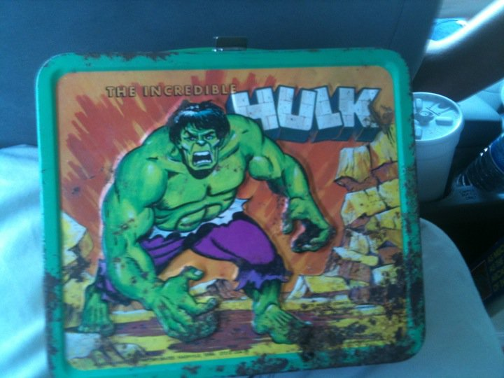

| Item | Description |
|---|---|
Signed copy of God's Little Acre by Erskine Caldwell |
In 1979, the Franklin Library released a limited number of copies of God's Little Acre that were signed by its author, Erskine Caldwell. |
| 1915 Church Lad's Brigade Bugle |
A bugle engraved with the Church Lad's Brigade insignia from 1915 that was most likely used by the brigade during WW1. |
| Hulk Collectible Lunchbox  |
During the 1970's Marvel super hero lunchboxes were very popular. This Hulk lunchbox from 1978 was one of the most popular of those lunch boxes. |
| AGFA Camera |
An AGFA ReadySet Special Folding camera from the 1940's. |
| Honorary Groundbreaking Shovel |
This is a folding shovel from WW2 that ended up in an army surplus store. It was then used for the honorary groundbreaking for the second aqueduct by the San Diego Water Authority in 1958. |
| Wolverine mini-series issue #1 |
This is issue #1 of the Wolverine mini-series.The original flagship title created for the character, this mini-series formed the basis for the movie Wolverine:Origins. |